The Fugue -a VR experience
The Fugue is an interactive VR experience in which immersants are placed in the psyche of a musician. Doubtful about his capabilities and merits, a celebrated pianist’s perception of reality and dreams becomes increasingly distorted as he prepares for his biggest performance yet. This experience will take you on a journey through performance anxiety, the weight of expectations and the mental obstacles you overcome along the way.
Program/Course
IAT445 - Immersive Environments
Role
Visual Artist/Designer
VR Interactables
Documenter
Video Designer
Tools
Oculus Meta Quest 1
SteamVR
Unity
Figma
premiere Pro
Miro
Initial Research
We started with a general research process that explored different applications and games in VR. After an idea of things that we liked or different ideas out there, we came together to find common ground for our final project. We initially did ideation on the mood of the topic we’d be most interested in. We then went into a brainstorming session for the direction/theme.


We started off by doing a timed activity to write down as many ideas as we could that included a general idea of what would happen and the theme with sticky notes. We then analyzed our ideas by finding out the common points and categorizing them.
 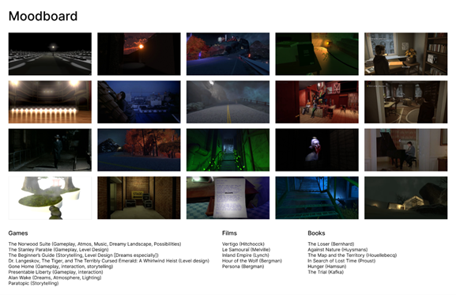
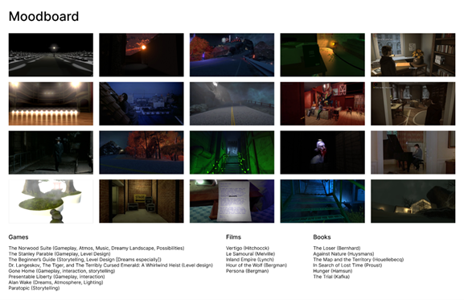
Final Storyline
Your career as a pianist is all dependent on your upcoming performance. You’ve sacrificed so much, relationships with your loved ones, your time, your sleep. Your nightmares as of late have gotten worse, a dream about you failing. You want to live up to the expectations, the critics, the audience, and most importantly, yourself.
Johan finds himself in the waiting room before your piano performance, the hallway is dimly lit and empty of people but there are voices talking about him that can be heard. At the end of the hallway is the main stage with light and the sound of the audience leaking out. Johan starts his performance off strong, but a few mistakes sneak in, he begins to panic and the audience can notice as the playing becomes a mess.
The song ends but there isn’t any applause, just silence.
It’s time to leave the stage and he walks through the exit, a hallway filled with articles about the performance and the imminent downfall of his career. They criticize his commitment, his talent, and his future. He desperately tries to find someone who acknowledges him but to no avail. The ground beneath him is made of piano keys and they begin to fall apart, he falls in the darkness along with the keys. Johan lands in a prison room made out of a piano. There is a silhouette outside of the room that leaves a letter. From the contents of the letter, it is his wife, and she talks about how his obsession with the piano is causing their relationship to suffer. Johan is free from the prison and walks down a path to head home. The surrounding houses are full of light and noise but shrouded in a fog while his own house is quiet. A final letter is besides the door to his home; it is his wife leaving for good.
Johan enters his home, which is in a dilapidated mess with comically large alarms scattered around the house and ticking noisily. There are also calendars with days crossed out, signaling his momentous day drawing near. Johan escapes his home through another hallway, where he finds letters to and from his mom. In one of his letters, he asks to see her. His mom answers back, telling him to wake up first. Johan reaches the end of the hallway, where a bed is waiting. When Johan reaches the bed, things fade to black and he finds himself back in the waiting room of a theater. The hallway to the stage is not as long this time. Instead, it is well-lit and vibrant. He heads on stage again, where a small audience waits. This time the performance goes smoothly.
Storyboard
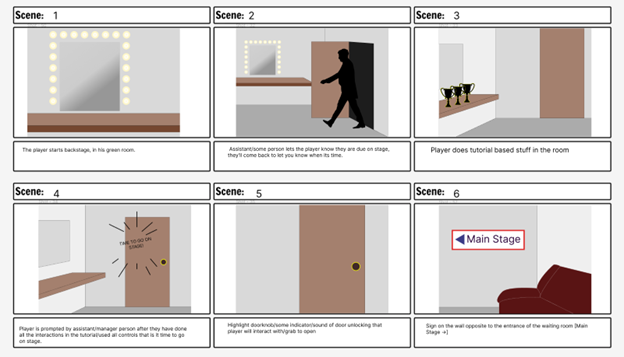 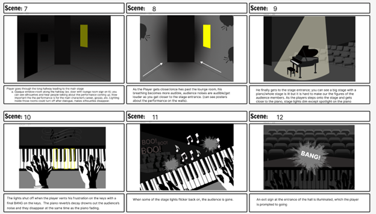 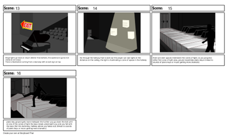 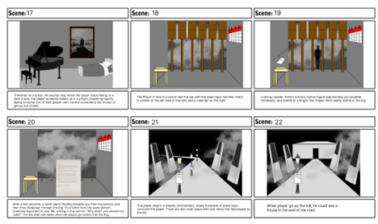 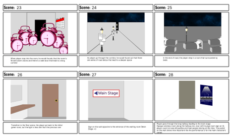 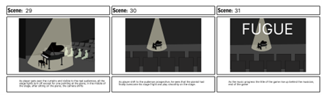
Poster
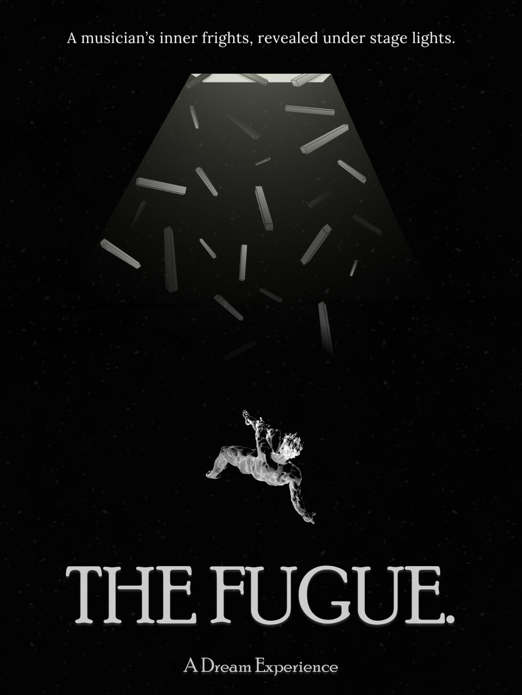Project Video
Final Environment Scenes
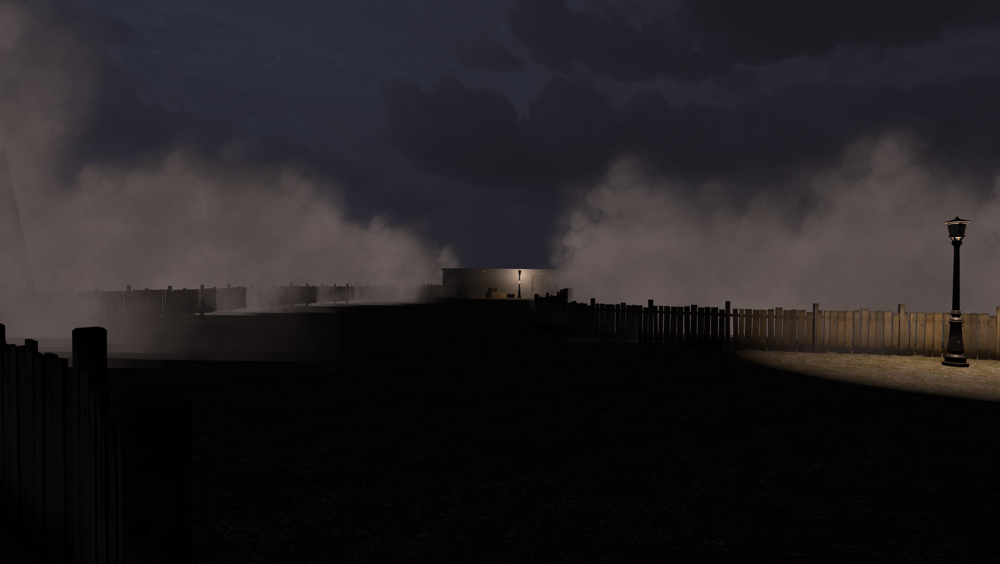
 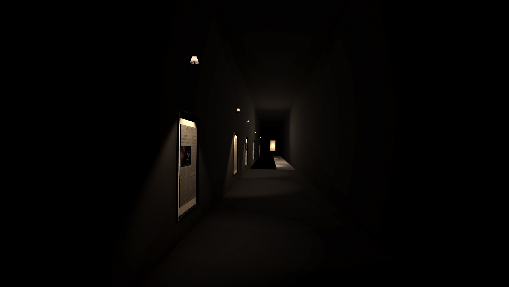
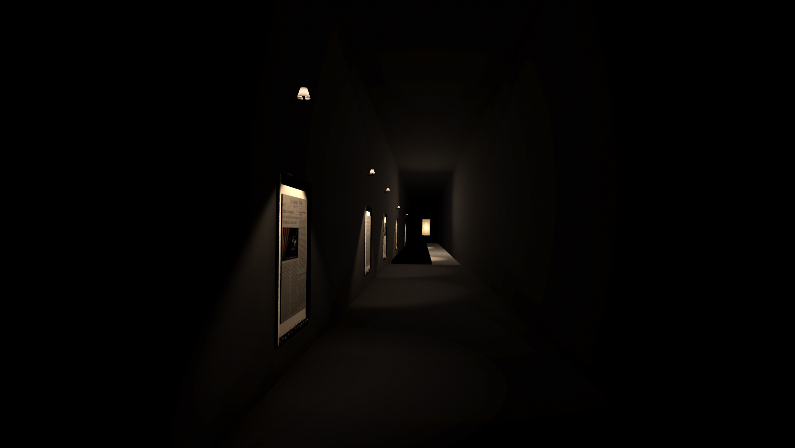
 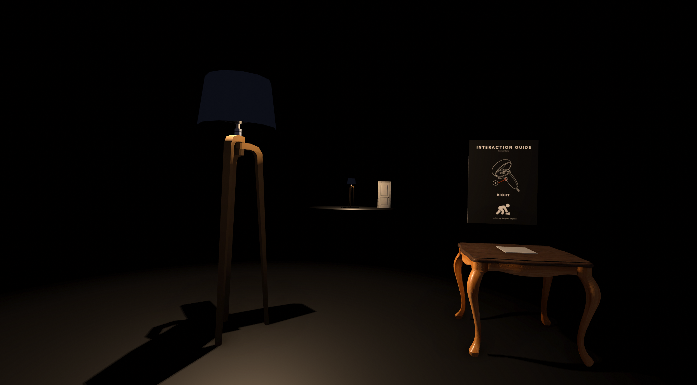
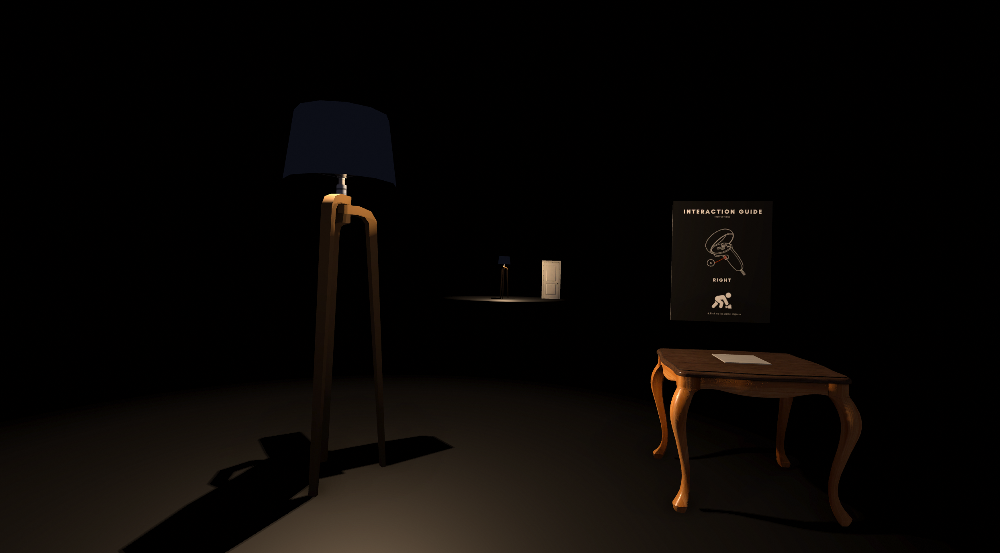

Final VR Experience
We showed our final VR experience in a public showcase at SFU's Surrey Campus and received a lot of good feedback and insights from the users.
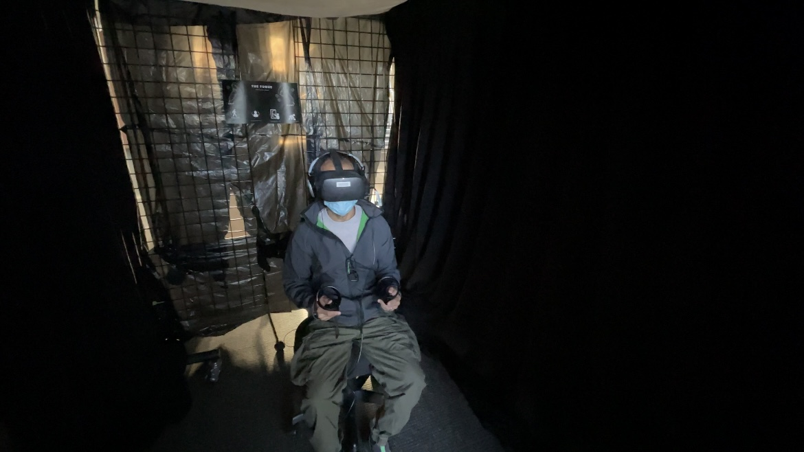

Reflection
Overall, we have made a successfully delivered the message we wanted for the users to feel during this experience. In Hindsight, we might have spent way too much time developing the story that we sometimes ignored the mechanics and requirements needed to improve the mechanics and interaction. I have developed a better understanding and skills in VR interaction and 3D modelling. The team that I collaborated with adapted the scrum project management framework which helped each and every member deliver a deadlines on time and in high standard